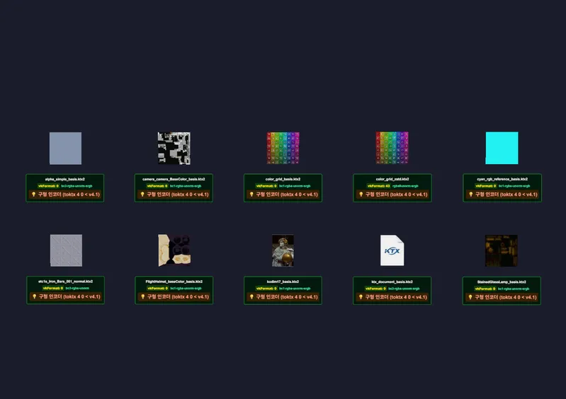

3D Material & Texture KTX2 Texture
Transcode (Basis Universal ETC1S / UASTC) - RedGPU WebGPU Example
Tests Basis Universal (ETC1S & UASTC) 2D KTX2 runtime transcoding.
Basis Universal(ETC1S, UASTC) KTX2 트랜스코딩 예제입니다.

3D Material & Texture KTX2 Texture
Tests Basis Universal (ETC1S & UASTC) 2D KTX2 runtime transcoding.
Basis Universal(ETC1S, UASTC) KTX2 트랜스코딩 예제입니다.
